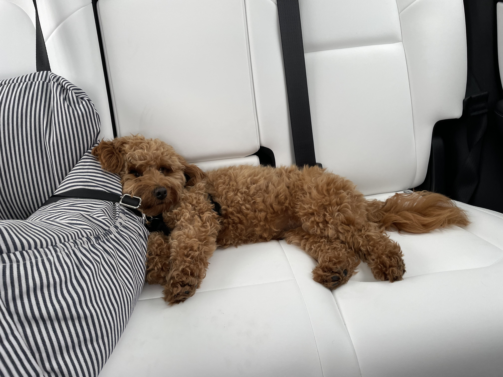

Skip to Main Content
Pets
- Ringo

- ringo.jpg
- 1 year old Golden Retriever puppy.
- Ringo is a 1yr old Golden Retriever. He loves to play with his countless toys and bother his mom while she's working. He enjoys hiking and going to the beach, and pretending like he can actually catch the birds he chases.
- At night just as the rest of the family is ready to relax, Ringo suddenly wants to release all of his energy. He will jump on the bed and run around forcing you to throw the ball. Sometimes he even will bark at the television if theres an animal.
- Photo Gallery
- couch_ringo.jpg
- Golden Retriever, Ringo, chilling on the couch.
- ringo_umich.jpg
- Golden Retriever puppy with his michigan football toy rooting for them in the Natinal Championship!
- stick_ringo.JPG
- Golden Retriever puppy with his stick he found at the park.
- ringooutside.JPG
- Golden Retriever puppy, Ringo, hanging out in his front yeard waiting to play.
- Likes
- jumping on the table
- Playing tag
- eating anything in sight
- Sunny
- sunnyperched.jpg
- Orange tabby cat perched on a chair at home.
- Sunny is a 9 month old orange tabby cat. Even though he is a cat, he has dog like tendencies, for example, he loves to play fetch and runs to the door when you arrive home. Sunny has a large personality for such a small body, and loves being held and pet. He will purr whenever someone gives him love, and will chase any laser pointer he sees. Sunny is extremely friendly, except to other dogs, like Ringo!
- Sometimes if the door is open, he will run outside and then hide under the house. He gets so scared, but he never learns! He likes to pretend that he is super tuff and is the king of the castle.
- Photo Gallery
- sunnywithsister.jpg
- Sunny, orange tabby cat, hanging out with his sister, Stevie.
- sunnylaundry.jpg
- Sunny, orange tabby cat, having a nap in the laundry basket
- sunnycarpet.jpg
- Sunny, orange tabby cat, rolling around on the floor
- sunny_professional.jpg
- Sunny, orange tabby cat, looking at the camera during his photoshoot.
- Likes
- Jumping on the furniture
- Scratching the carpet
- Getting attention
- Denver

- denver.jpg
- Mini golden doodle laying down in the car during a drive.
- Denver is a mini golden doodle puppy. He lives in New York City, so he loves bagels walking in central park. He is so small that he can just jump anywhere, and you can take him with you everywhere you go. He is quite the nervous dog, so he stays by his parents' side at all times whenever possible.
- Denver got his name because before living in New York City, he lived in Denver and loved the snow and skiing with his parents. He is such a lovable dog and will snuggle with you on the couch at any time of the day. Sometimes he steals your food off your plate when you're eating, but we love him none the less!
- Photo Gallery
- denvertoy.jpg
- Denver, mini golden doodle, snuggling his favorite rabbit toy.
- denversun.jpg
- Denver, mini golden doodle taking a nap in his favorite sun spot, cuddled in a blanket.
- denverplay.jpg
- Denver, mini golden doodle, playing tug of war, which is his favorite game.
- denverplay.jpg
- Denver, mini golden doodle, waiting patiently for a treat.
- Likes
- Barking at the door.
- Playing at the dog park.
- Peanut Butter
- Cody

- cody.jpg
- Corgi posing for the camera looking super cute.
- Cody is a two year old corgi puppy. He is extremely friendly and rambunctious, as he is always ready to play with any toy in sight and will never pass up a walk. Despite his little legs, he can jump onto any elevated surfact just to stay close to you. He loves to cuddle on the couch or the bed, but then will decide he's ready to play right when you are going to sleep.
- Cody will always speak his mind, as he loves to bark and yap at anything he feels strongly about, whether he's hungry or just ready for a walk. He also loves to go on jogs with his parents through the park and meet other dogs. He is extremely social and is always ready to meet new friends. He never barks, so that's one less thing to worry about. He does not like to wait patiently for his food.
- Photo Gallery
- cody_deathvalley.jpg
- Corgi at Death Valley, exploring around.
- cody_fireplace.jpg
- Cody the corgi taking a nap by the fireplace to keep warm in the winter!
- cody_play.jpg
- Cody the corgi laying upside down waiting for his toy to be thrown.
- cody_sea.jpg
- Cody the corgi, overlooking the ocean on a cliff, wearing his Michigan leash!
- Likes
- Bones to chew on
- Chasing a tennis ball
- Naps
- Georgia

- georgia_sitting.jpeg
- Georgia, a brown golden doodle, is sitting down posing for the camera.
- Gerogia is a 4 year old brown golden doodle. She is super friendly to other people, but is scared of other dogs. She loves meeting new people and will jump on them and play with them immediately. When she encounters another dog, she is definitely skeptical but will warm up. She loves to fetch her tennis ball, and also play tug of war with her owners. Her favorite activity is to bring her tennis ball with her on walks, so she can play fetch whenever she chooses!
- Georgia loves to lay in the sun in the backyard and has to take at least three naps throughout the day. She loves going on hikes with her parents and exploring new places. She loves to go swimming in the creeks and give her owners a scare. She is a dare devil for sure, but will always come back to her owners. She loves treats and has so many tricks to show you, like sit, roll over, and she even knows how to shake both your left and right hands.
- Photo Gallery
- georgia_balcony.jpg
- Georgia, a brown golden doodle, hanging out on her balcony on a nice afternoon.
- georgia_in_chair.jpg
- Georgia, a brown golden doodle, taking a nap, cuddling her favorite toy on her favorite chair.
- georgia_on_walk.jpg
- Georgia, a brown golden doodle, on a walk with her sister through the neighborhood.
- Likes
- blueberries
- the beach
- walks